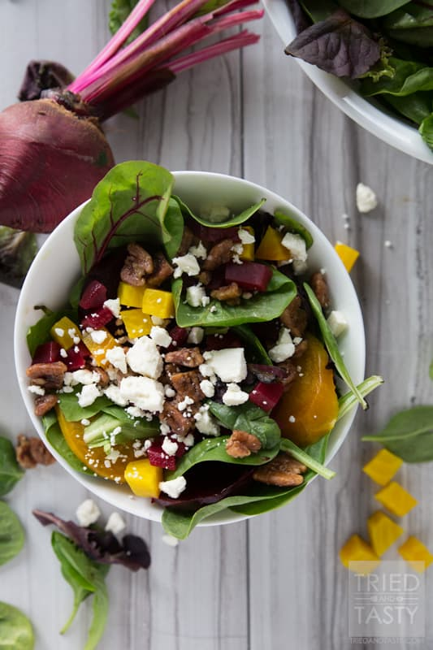

Recipe
Home
Sundial
The Perfect Salad

Description
This Salad is my favorite because of the combination of the ingredients in it.
Ingredients
Romain Lettuce
Tomato
Cranberry
Beets
Corns
Avocado
Chicken
Directions
Shredded the romain lettuce into small pieces.
Diced the tomato into small square size.
Dried up a small portion of cranberries in a toaster.
Chopped the beets into small size.
A small portion of corn grains(Maize).
Peeled and sliced an avocado.
Grilled a chicken breast to perfection.
Chopped the grilled chicken into small pieces.
Add a little salad dressing and Mixed everything in a bowl.